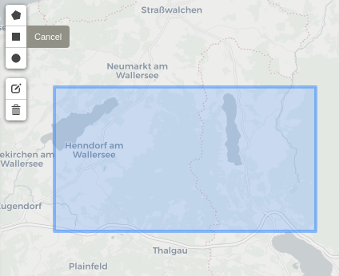
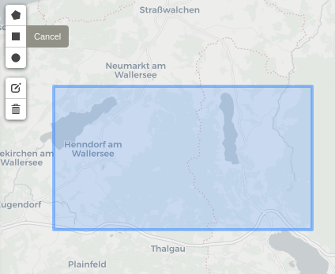

2 Getting started
The web-frontend of our semantic querying interface can be found online at demo.sen2cube.at. The interface is fully web-based. There is no need to install additional software.
2.1 Components
A semantic query has three main components:
- Model: This forms the core of the query, in which the semantic concepts are defined, and the desired results are formulated.
- Area of Interest: This defines the spatial extent of the query.
- Time Interval: This defines the temporal extent of the query.
2.2 Workflow
Each component can be set in the pane on the left side of the webpage.

2.2.1 Selecting the model
Clicking Browse all models shows a list of pre-constructed models that can be used directly. At the end of that list, you can click the + icon to construct a new model. For that, read the documentation on model construction (3).
2.2.2 Selecting the area of interest
The area of interest can be drawn within the country borders of Austria, in three different ways:
- As a point or a set of points.
- As a line or a set of lines.
- As a polygon or a set of polygons.

 

Valid areas of interest can also be non-rectangular shaped or non-continuous.

The drawn shapes are internally translated into GeoJSON format. Instead of drawing the shapes by hand, it is also possible to use an external GeoJSON file, either by uploading it, or linking to it.
2.2.3 Selecting the time interval
The time interval is defined by a start date and an end date. The interval is closed at both sides, meaning that both the specified start date and end date are included. Currently, the Austrian semantic data cube contains data from insert date to insert date .
2.2.4 Executing the query
Once the model, the area of interest and the time interval are set, the query can be executed by clicking Start inference. Depending on the size and complexity of the query, execution might take some time.
2.2.5 Viewing the results
When successfully processed, results can be viewed by clicking the View results button that will appear. Results with a spatial dimension will be visualized on a map, and results with only a temporal dimension will be visualized as a line graph if the data values are numerical. Most other types of data will be visualized as a plain list. Besides the visualization, there is also the option to download the results as either a GeoTIFF (for spatial data) or CSV (for non-spatial data) file. You can also choose to download a result as a QGIS Project File.

In the case the query could not be processed successfully, an error message describing the problem will appear instead.
Insert video that showcases the full workflow